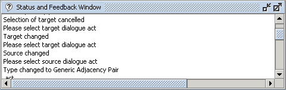

The Status and Feedback Window (Figure 1) displays the current system status, actions that are currently performed and the system's responses to the performed actions.

Figure 1: Status and Feedback Window